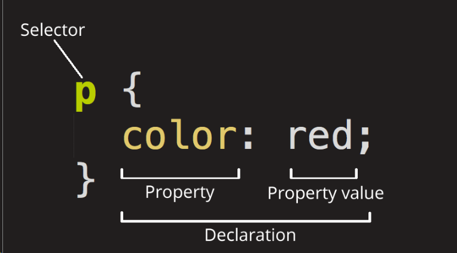
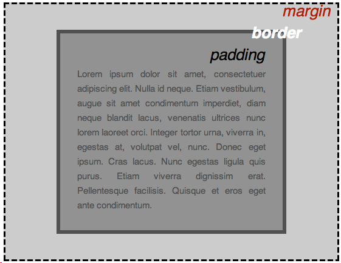

css
目录
什么是css
引用css
也就是 <head> 和 </head> 标签之间
<link href="styles/style.css" rel="stylesheet" />
和 HTML 类似，CSS 也不是真正的编程语言，甚至不是标记语言。CSS 是一门样式表语言，这也就是说人们可以用它来选择性地为 HTML 元素添加样式。

HTML 元素的名称位于规则集开始。它选择了一个或多个需要添加样式的元素（在这个例子中就是 \
元素）。要给不同元素添加样式，只需要更改选择器。
一个单独的规则，如 color: red; 用来指定添加样式元素的属性。
改变 HTML 元素样式的途径（本例中 color 就是 \
元素的属性）。CSS 中，由编写人员决定修改哪个属性以改变规则。
在属性的右边，冒号后面即属性的值，它从指定属性的众多外观中选择一个值（我们除了 red 之外还有很多属性值可以用于 color ）。
注意其他重要的语法：
- 除了选择器部分，每个规则集都应该包含在成对的大括号里（
{}）。 - 在每个声明里要用冒号（
:）将属性与属性值分隔开。 - 在每个规则集里要用分号（
;）将各个声明分隔开。
选择多个用逗号分开
选择器
| 选择器名称 | 选择的内容 | 示例 |
|---|---|---|
| 元素选择器（也称作标签或类型选择器） | 所有指定类型的 HTML 元素 | p选择 <p> |
| ID 选择器 | 具有特定 ID 的元素。单一 HTML 页面中，每个 ID 只对应一个元素，一个元素只对应一个 ID | #my-id选择 <p id="my-id"> 或 <a id="my-id"> |
| 类选择器 | 具有特定类的元素。单一页面中，一个类可以有多个实例 | .my-class选择 <p class="my-class"> 和 <a class="my-class"> |
| 属性选择器 | 拥有特定属性的元素 | img[src]选择 <img src="myimage.png"> 但不是 <img> |
| 伪类选择器 | 特定状态下的特定元素（比如鼠标指针悬停于链接之上） | a:hover选择仅在鼠标指针悬停在链接上时的 <a> 元素 |
属性选择器
| 选择器 | 示例 | 描述 | ||
|---|---|---|---|---|
[_attr_] |
a[title] |
匹配带有一个名为_attr_的属性的元素——方括号里的值。 | ||
[_attr_=_value_] |
a[href="https://example.com"] |
匹配带有一个名为_attr_的属性的元素，其值正为_value_——引号中的字符串。 | ||
[_attr_~=_value_] |
p[class~="special"] |
匹配带有一个名为_attr_的属性的元素，其值正为_value_，或者匹配带有一个_attr_属性的元素，其值有一个或者更多，至少有一个和_value_匹配。 注意，在一列中的好几个值，是用空格隔开的。 | ||
| `[attr\ | =value]` | `div[lang\ | ="zh"]` | 匹配带有一个名为_attr_的属性的元素，其值可正为_value_，或者开始为_value_，后面紧随着一个连字符。 |
子字符选择器
| 选择器 | 示例 | 描述 |
|---|---|---|
[attr^=value] |
li[class^="box-"] |
匹配带有一个名为_attr_的属性的元素，其值开头为_value_子字符串。 |
[attr$=value] |
li[class$="-box"] |
匹配带有一个名为_attr_的属性的元素，其值结尾为_value_子字符串 |
[attr*=value] |
li[class*="box"] |
匹配带有一个名为_attr_的属性的元素，其值的字符串中的任何地方，至少出现了一次_value_子字符串。 |
伪类伪元素
伪类就是开头为冒号的关键字： :pseudo-class-name
伪元素开头为双冒号:: ::pseudo-element-name
伪类
| 选择器 | 描述 |
|---|---|
| :active | 在用户激活（例如点击）元素的时候匹配。 |
| :any-link | 匹配一个链接的:link和:visited状态。 |
| :blank | 匹配空输入值的\元素。 |
| :checked | 匹配处于选中状态的单选或者复选框。 |
| :current (en-US) | 匹配正在展示的元素，或者其上级元素。 |
| :default | 匹配一组相似的元素中默认的一个或者更多的 UI 元素。 |
| :dir | 基于其方向性（HTMLdir属性或者 CSSdirection属性的值）匹配一个元素。 |
| :disabled | 匹配处于关闭状态的用户界面元素 |
| :empty | 匹配除了可能存在的空格外，没有子元素的元素。 |
| :enabled | 匹配处于开启状态的用户界面元素。 |
| :first | 匹配分页媒体的第一页。 |
| :first-child | 匹配兄弟元素中的第一个元素。 |
| :first-of-type | 匹配兄弟元素中第一个某种类型的元素。 |
| :focus | 当一个元素有焦点的时候匹配。 |
| :focus-visible | 当元素有焦点，且焦点对用户可见的时候匹配。 |
| :focus-within | 匹配有焦点的元素，以及子代元素有焦点的元素。 |
| :future (en-US) | 匹配当前元素之后的元素。 |
| :hover | 当用户悬浮到一个元素之上的时候匹配。 |
| :indeterminate | 匹配未定态值的 UI 元素，通常为复选框。 |
| :in-range | 用一个区间匹配元素，当值处于区间之内时匹配。 |
| :invalid | 匹配诸如<input>的位于不可用状态的元素。 |
| :lang | 基于语言（HTMLlang属性的值）匹配元素。 |
| :last-child | 匹配兄弟元素中最末的那个元素。 |
| :last-of-type | 匹配兄弟元素中最后一个某种类型的元素。 |
| :left | 在分页媒体中，匹配左手边的页。 |
| :link | 匹配未曾访问的链接。 |
| :local-link (en-US) | 匹配指向和当前文档同一网站页面的链接。 |
| :is() | 匹配传入的选择器列表中的任何选择器。 |
| :not | 匹配作为值传入自身的选择器未匹配的物件。 |
| :nth-child | 匹配一列兄弟元素中的元素——兄弟元素按照_an+b_形式的式子进行匹配（比如 2n+1 匹配元素 1、3、5、7 等。即所有的奇数个）。 |
| :nth-of-type | 匹配某种类型的一列兄弟元素（比如，<p>元素）——兄弟元素按照_an+b_形式的式子进行匹配（比如 2n+1 匹配元素 1、3、5、7 等。即所有的奇数个）。 |
| :nth-last-child | 匹配一列兄弟元素，从后往前倒数。兄弟元素按照_an+b_形式的式子进行匹配（比如 2n+1 匹配按照顺序来的最后一个元素，然后往前两个，再往前两个，诸如此类。从后往前数的所有奇数个）。 |
| :nth-last-of-type | 匹配某种类型的一列兄弟元素（比如，<p>元素），从后往前倒数。兄弟元素按照_an+b_形式的式子进行匹配（比如 2n+1 匹配按照顺序来的最后一个元素，然后往前两个，再往前两个，诸如此类。从后往前数的所有奇数个）。 |
| :only-child | 匹配没有兄弟元素的元素。 |
| :only-of-type | 匹配兄弟元素中某类型仅有的元素。 |
| :optional | 匹配不是必填的 form 元素。 |
| :out-of-range | 按区间匹配元素，当值不在区间内的的时候匹配。 |
| :past (en-US) | 匹配当前元素之前的元素。 |
| :placeholder-shown | 匹配显示占位文字的 input 元素。 |
| :playing | 匹配代表音频、视频或者相似的能“播放”或者“暂停”的资源的，且正在“播放”的元素。 |
| :paused | 匹配代表音频、视频或者相似的能“播放”或者“暂停”的资源的，且正在“暂停”的元素。 |
| :read-only | 匹配用户不可更改的元素。 |
| :read-write | 匹配用户可更改的元素。 |
| :required | 匹配必填的 form 元素。 |
| :right | 在分页媒体中，匹配右手边的页。 |
| :root | 匹配文档的根元素。 |
| :scope | 匹配任何为参考点元素的的元素。 |
| :valid | 匹配诸如<input>元素的处于可用状态的元素。 |
| :target | 匹配当前 URL 目标的元素（例如如果它有一个匹配当前URL 分段的元素）。 |
| :visited | 匹配已访问链接。 |
| :where | 条件 |
伪元素
| 选择器 | 描述 |
|---|---|
| ::after | 匹配出现在原有元素的实际内容之后的一个可样式化元素。 |
| ::before | 匹配出现在原有元素的实际内容之前的一个可样式化元素。 |
| ::first-letter | 匹配元素的第一个字母。 |
| ::first-line | 匹配包含此伪元素的元素的第一行。 |
| ::grammar-error | 匹配文档中包含了浏览器标记的语法错误的那部分。 |
| ::selection | 匹配文档中被选择的那部分。 |
| ::spelling-error | 匹配文档中包含了浏览器标记的拼写错误的那部分。 |
关系选择器
| 选择器 | 描述 |
|---|---|
| 空格（" "）字符——组合两个选择器 | body article p 后代选择器 |
| article > p | 子代关系选择器是个大于号（>），只会在选择器选中直接子元素的时候匹配 |
| p + img | 邻接兄弟选择器（+）用来选中恰好处于另一个在继承关系上同级的元素旁边的物件 |
| p ~ img | 通用兄弟， 选中一个元素的兄弟元素，即使它们不直接相邻 |
CSS：一切皆盒子
编写 CSS 时你会发现，你的工作好像是围绕着一个一个盒子展开的——设置尺寸、颜色、位置，等等。页面里大部分 HTML 元素都可以被看作若干层叠的盒子。

padding（内边距）：是指内容周围的空间。在下面的例子中，它是段落文本周围的空间。border（边框）：是紧接着内边距的线。margin（外边距）：是围绕元素边界外侧的空间。
层叠和继承
优先级：
上到下， 先具体后大概 想同权重，则是后面的应用 !importer 最高优先级
继承
inherit设置该属性会使子元素属性和父元素相同。实际上，就是“开启继承”。
initial将应用于选定元素的属性值设置为该属性的初始值。
revert (en-US)将应用于选定元素的属性值重置为浏览器的默认样式，而不是应用于该属性的默认值。在许多情况下，此值的作用类似于 unset。
revert-layer (en-US)将应用于选定元素的属性值重置为在上一个层叠层中建立的值。
unset将属性重置为自然值，也就是如果属性是自然继承那么就是 inherit，否则和 initial 一样